1
画面全体を確認する
上から「アルバム情報」「曲データ」「再生設定」「STATUS」「CCKアクセストークン」の順に操作します。
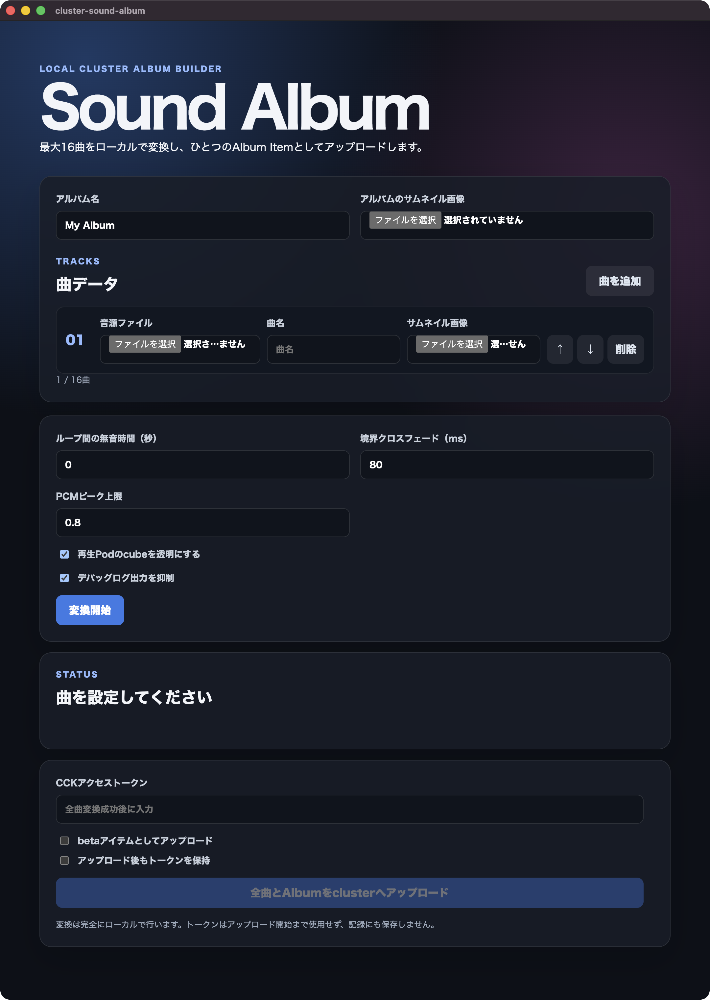
User Guide
音源とサムネイル画像からSound Pod用のアイテムを作成し、clusterへアップロードする手順を説明します。
上から「アルバム情報」「曲データ」「再生設定」「STATUS」「CCKアクセストークン」の順に操作します。

アルバム名と画像、各曲の音源・曲名・サムネイルを設定します。必要に応じて曲を追加して再生設定を調整し、「変換開始」をクリックします。
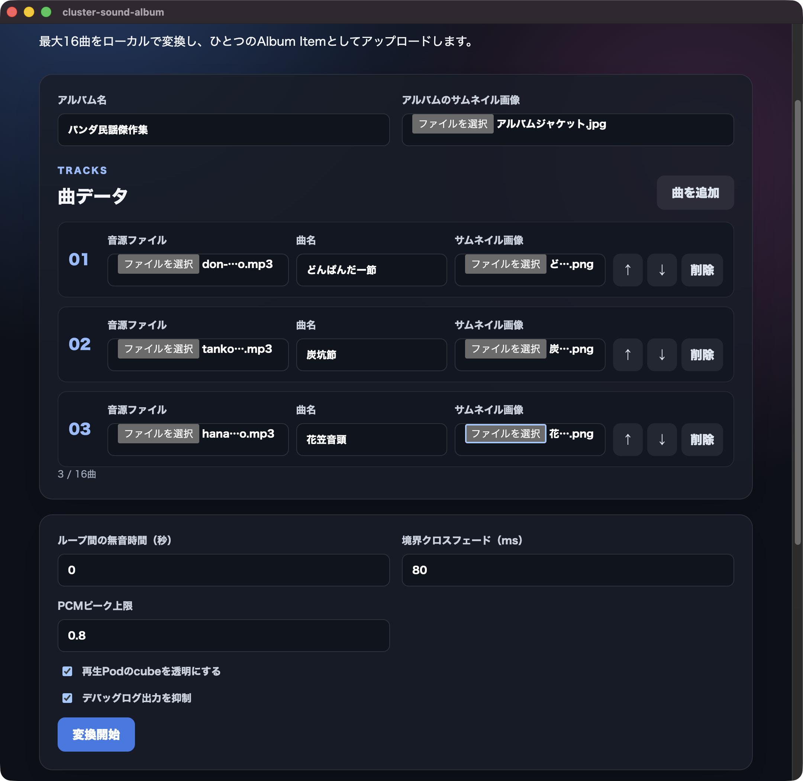
Chapter 1
STATUS欄に「全曲を変換しています」と表示されます。処理が完了するまでアプリを終了しないでください。
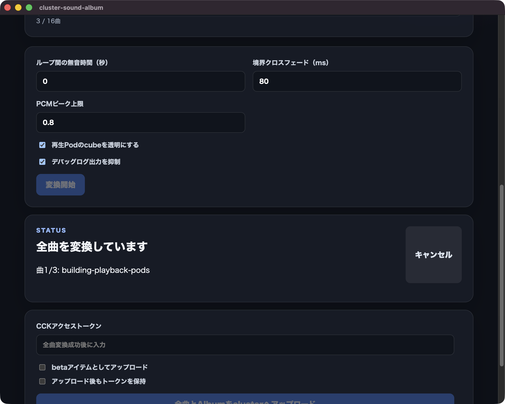
「全曲の変換が完了しました」と表示され、各曲の容量とPod数が一覧になれば変換完了です。
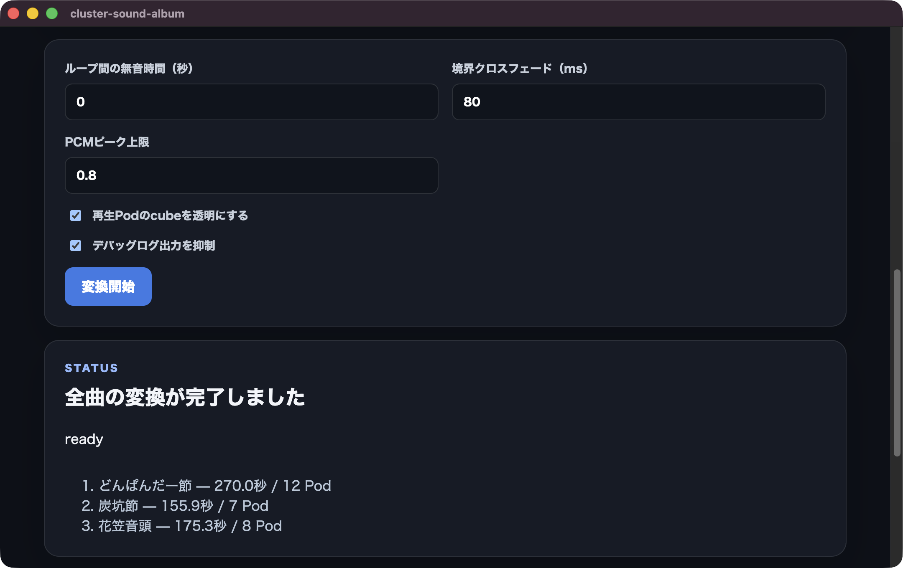
Chapter 2
clusterのWebサイトへログインし、右上のプロフィールメニューから「アクセストークン」を選択します。
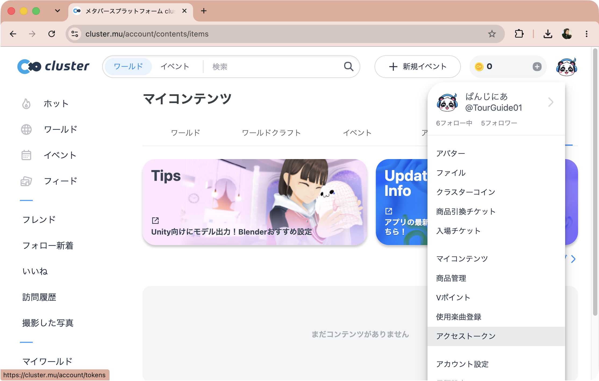
「アクセストークン」のCreator Kitトークン欄で「トークン作成」をクリックします。
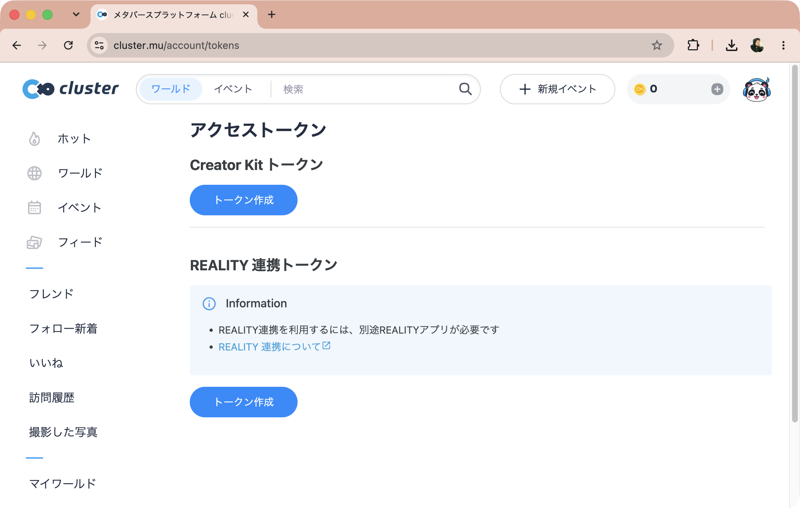
Chapter 3
表示されたトークンのコピーボタンをクリックし、安全な場所へ一時的にコピーします。
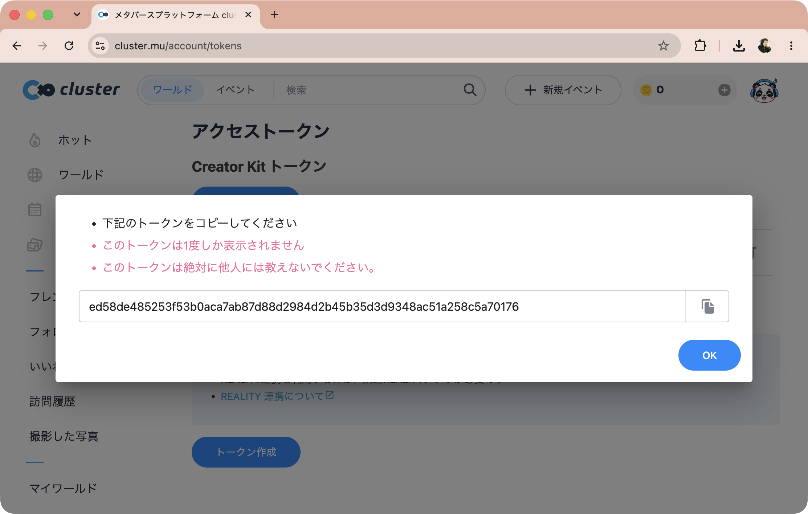
アプリの「CCKアクセストークン」へ貼り付け、必要なアップロード設定を選択して「全曲をAlbumをclusterへアップロード」をクリックします。
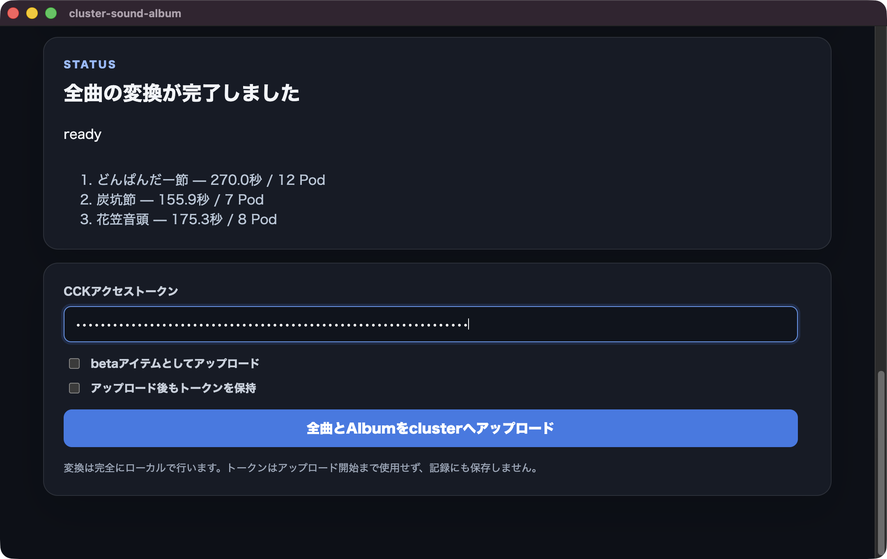
Chapter 3
STATUS欄に「clusterへアップロードしています」と表示されます。完了するまでアプリを終了しないでください。
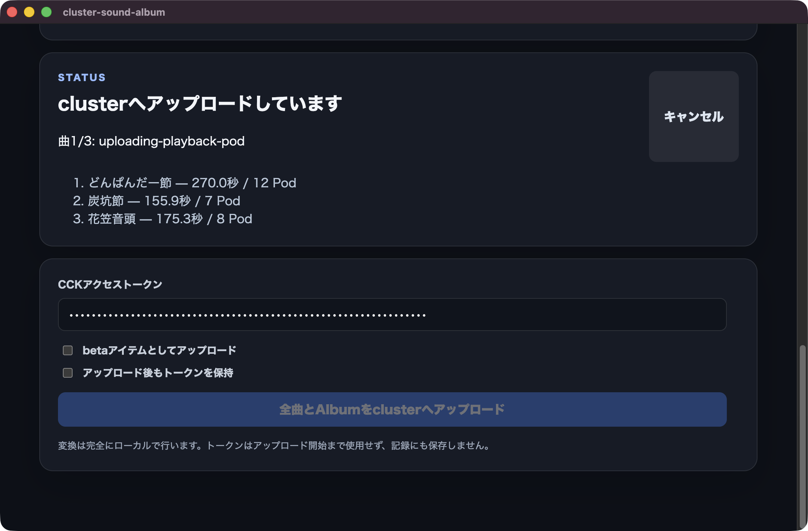
「Albumのアップロードが完了しました」と表示されたら完了です。必要に応じて表示されたAlbum Item IDをコピーします。
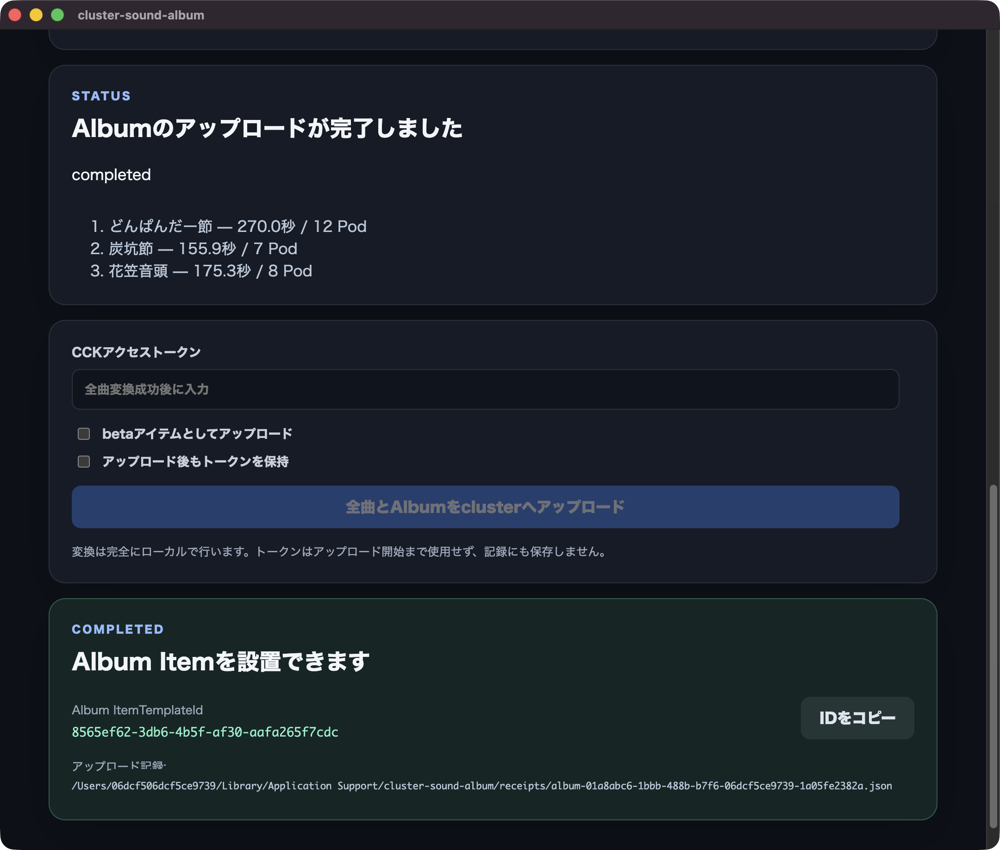
Chapter 4
clusterの「マイコンテンツ」→「クラフトアイテム」を開き、アップロードされたアイテム一式を確認します。
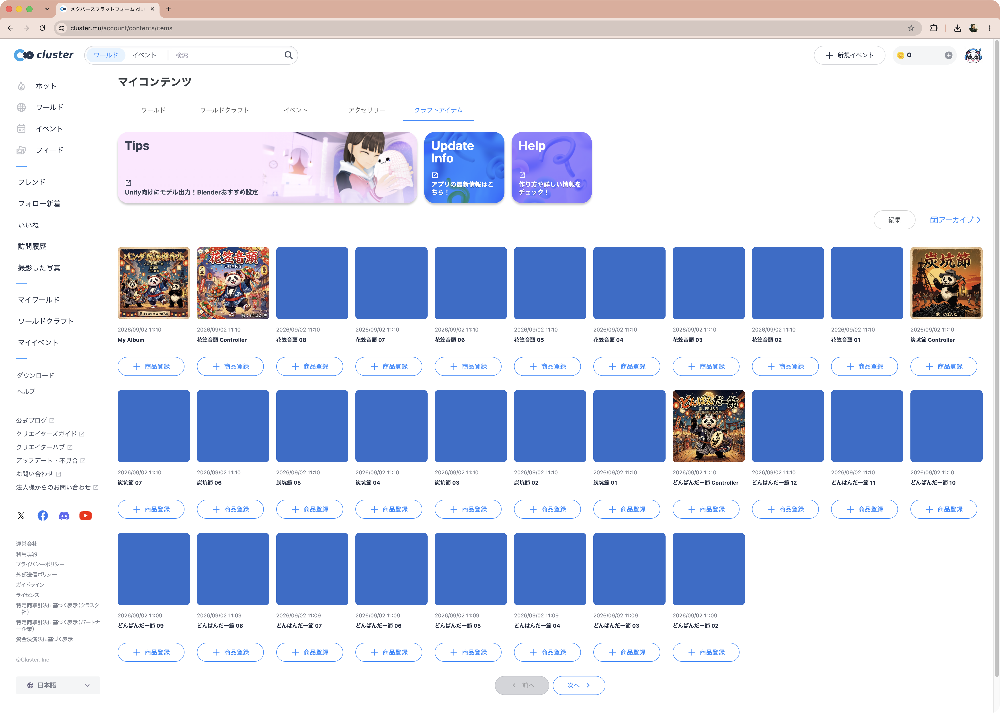
番号だけが表示された青い分割アイテムを選択し、アーカイブします。アルバム本体や曲名付きのアイテムは残してください。
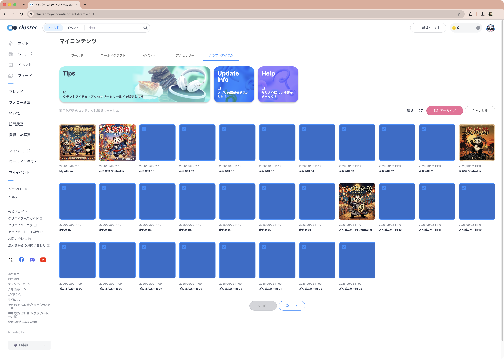
Completed
アルバム本体と各曲のクラフトアイテムが残っていれば、ワールドで利用する準備は完了です。
アーカイブ後に一覧を再表示し、アルバム本体と曲名付きアイテムが表示されていることを確認します。
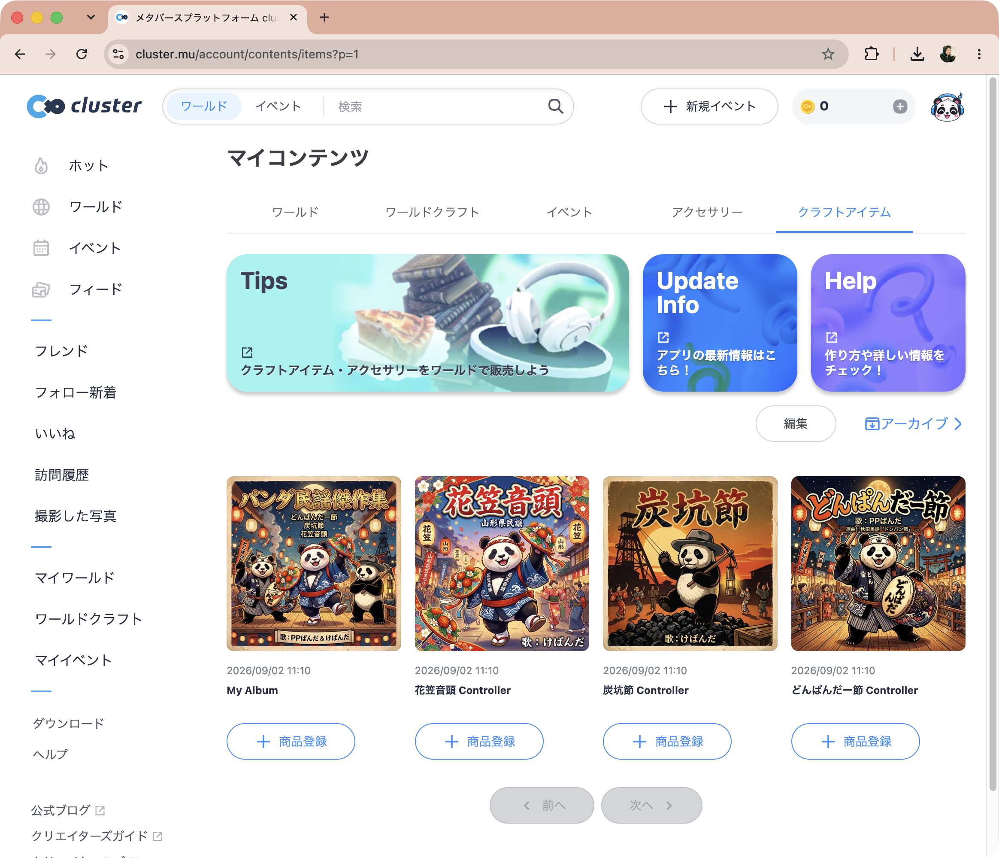